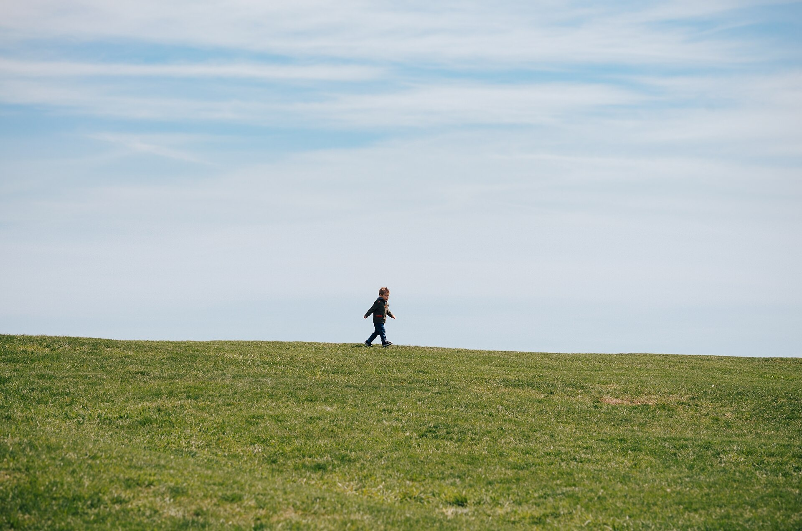
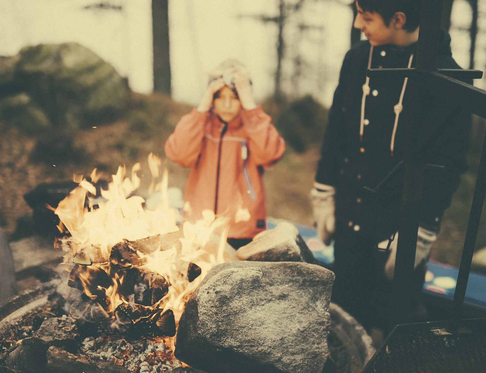

¿No
encajo?
encajo?
Una novela, un cuento y una canción para hablar de soledad, ansiedad e identidad.


| Redacción | [Nombre completo] |
| Diseño | [Nombre completo] |
| Investigación | [Nombre completo] |
| Edición | [Nombre completo] |
| Equipo | Equipo 4 · Grupo [grupo] |
| Escuela | [Nombre de la escuela] |
| Asignatura | [Asignatura] · Docente: [nombre] |
| Edición | Núm. 1 · Vol. 1 · Noviembre 2026 |
Casi todos recordamos la primera vez que sentimos que sobrábamos en una conversación, en un salón o en un grupo. Esa sensación —incómoda, silenciosa— suele aparecer justo cuando más queremos pertenecer: en la adolescencia.
Según la Organización Mundial de la Salud (OMS), una de cada siete personas de 10 a 19 años vive con una condición de salud mental, y con frecuencia pasa inadvertida o sin atención. Detrás de esa cifra hay conversaciones que no ocurren, burlas que se normalizan y emociones que aprendemos a esconder.
Esta revista toma una postura clara: sentirse solo, ansioso o distinto no te hace «raro» ni «defectuoso», pero tampoco es algo que tengas que aguantar en silencio. No diagnosticamos a nadie —ni a ti ni a los personajes— y no sustituimos a ningún profesional de la salud. Lo que hacemos es poner a conversar tres experiencias: un joven que huye de todo en Nueva York (El guardián entre el centeno), un patito que no encuentra su lugar (El patito feo) y una canción de consuelo que cierra una película sobre un niño que quiere pertenecer (La familia del futuro).
¿Por qué literatura, música y cuento? Porque nos permiten hablar de lo difícil a una distancia segura, ponerle nombre a lo que sentimos y descubrir que no somos los únicos. Si al terminar esta revista alguien se anima a preguntar «¿cómo estás, de verdad?» y a escuchar la respuesta, habremos cumplido.
— El equipo editorial
La adolescencia es una etapa de cambios físicos, emocionales y sociales, y también de decisiones: con quién estar, qué estudiar, cómo mostrarse. La OMS estima que una de cada siete personas de 10 a 19 años (14.3 %) vive con una condición de salud mental y advierte que quienes la tienen son más vulnerables al estigma y a la exclusión social.
En México, la Encuesta Nacional de Bienestar Autorreportado (ENBIARE) 2021 del INEGI halló que 15.4 % de la población adulta presentaba síntomas de depresión y 19.3 %, síntomas de ansiedad severa. Son datos de personas de 18 años o más, no de adolescentes: los usamos como contexto del país, no como retrato de nuestra generación.
Sobre la soledad, el informe de la Comisión de la OMS sobre Conexión Social (2025) reporta que entre 17 % y 21 % de las personas de 13 a 29 años dice sentirse sola, con las cifras más altas entre adolescentes.
Las tres obras que acompañan este número hablan de esa experiencia: Holden se aísla y se defiende de lo que duele; el patito es rechazado por ser distinto; y la canción ofrece consuelo para quien carga con demasiado. Las tres preguntan lo mismo: ¿qué necesitamos para pertenecer sin dejar de ser nosotros?

El guardián entre el centeno
J. D. Salinger (1951). Un adolescente que se aísla, se defiende con ironía y busca a alguien con quien hablar de verdad.
Little Wonders / Instantes de maravilla
Rob Thomas, para La familia del futuro (2007). Una voz que invita a soltar lo que pesa y valorar lo pequeño.
El patito feo
H. C. Andersen (1843). Un ser rechazado por ser distinto que termina descubriendo quién es y dónde pertenece.
| Recordar | Págs. 4, 5 y 12 |
| Comprender | Págs. 5 y 6 |
| Aplicar | Págs. 7, 10 y 11 |
| Analizar | Págs. 12 y 14 |
| Evaluar | Págs. 13 y 14 |
| Crear | Págs. 11 y 15 |
La OMS define la salud mental como un estado de bienestar mental que permite afrontar las tensiones de la vida, desarrollar las propias capacidades, aprender y trabajar bien y contribuir a la comunidad. Existe en un continuo: puedes tener un mal mes sin tener un trastorno, y puedes vivir con una condición de salud mental y aun así tener momentos de bienestar.
Factores individuales (habilidades emocionales, genética, consumo de sustancias), familiares y de amistad, comunitarios y estructurales, como la pobreza, la violencia o la desigualdad. La OMS subraya que ningún factor predice por sí solo lo que le pasará a alguien: muchas personas expuestas a riesgos no desarrollan problemas, y otras sí sin un factor evidente. Entre los factores de protección están las habilidades socioemocionales, las relaciones positivas, la educación de calidad y los lazos comunitarios fuertes.
La OMS identifica como fuentes de estrés la presión para encajar con los pares y la exploración de la identidad, y señala que los medios y las normas de género pueden ampliar la distancia entre la vida real y lo que se espera de nosotros. La violencia, el acoso escolar y los problemas socioeconómicos son riesgos reconocidos. En cambio, dormir con regularidad, moverse, aprender a manejar emociones y resolver problemas, y contar con entornos que apoyen, protegen. En lo cotidiano se nota en cómo dormimos, en cómo nos concentramos en clase y en si nos animamos a hablarle a alguien.
No son un diagnóstico. Si varias se mantienen por semanas y afectan tu vida, habla con alguien de confianza o con un profesional.

La ansiedad nos prepara ante una amenaza real o percibida: un examen, una exposición, una discusión. Acelera el corazón, tensa los músculos y llena la mente de «¿y si…?». Normalmente baja cuando la situación pasa.
La OMS describe los trastornos de ansiedad como miedo y preocupación intensos y excesivos, difíciles de controlar, que causan malestar importante, duran por lo general al menos varios meses e interfieren con la vida familiar, social y escolar. Suelen acompañarse de evitar lo que da miedo. Hay varios tipos: ansiedad generalizada, trastorno de pánico, ansiedad social y fobias específicas, entre otros.
En el cuerpo: palpitaciones, sudor, temblor, náuseas o malestar abdominal, problemas para dormir. En la mente: dificultad para concentrarse o decidir, sensación de peligro inminente. En la conducta: evitar clases, exposiciones, reuniones o lugares.
| Criterio | Ansiedad como emoción | Posible trastorno (requiere valoración profesional) |
|---|---|---|
| Duración | Pasajera; se liga a una situación concreta. | Persistente, por lo general varios meses. |
| Intensidad | Proporcional a lo que enfrentas. | Intensa y excesiva frente a la situación. |
| Control | Puedes calmarte, aunque cueste. | Difícil de controlar. |
| Efecto en tu vida | Incomoda, pero sigues con tus actividades. | Interfiere con la escuela, la familia y las amistades. |
| Evitación | Poca o nula. | Evitas las situaciones que la provocan. |
Valeria tiene examen mañana: repasa sin parar, le late fuerte el corazón y duerme poco; pasa el examen y todo baja. Dani lleva meses evitando exposiciones y pasillos por miedo a hacer el ridículo, ya no va a actividades que le gustaban y se siente atrapado. Ambos sienten ansiedad, pero el patrón de Dani merece consulta. Ilustra la diferencia; no diagnostica a nadie.
Tiempo a solas que buscas: leer, pensar, crear, descansar. Puede ser un espacio valioso y no implica sufrimiento. La eliges tú.
Para la OMS, es la sensación dolorosa que surge de la brecha entre las conexiones que deseas y las que tienes. Puede ocurrir incluso rodeado de gente.
Falta objetiva de suficientes conexiones sociales: pocas personas, pocos contactos, pocos espacios. Se puede estar aislado sin sentirse solo, y al revés.

Pertenecer no es parecerse: es sentirse aceptado tal como eres. La OMS señala que la conexión social protege la salud a lo largo de la vida, ayuda a la salud mental y reduce el riesgo de muerte temprana, mientras que la soledad y el aislamiento lo aumentan.
En la adolescencia el riesgo se agrava: la OMS indica que el retraimiento social puede empeorar el aislamiento y la soledad, y que los adolescentes con una condición de salud mental son más vulnerables a la exclusión y al estigma. Por eso la empatía —intentar entender lo que otra persona siente sin juzgarla— no es un adorno: es parte del cuidado de la salud mental de una comunidad.
El psicólogo Erik Erikson propuso que la tarea central de esta etapa es construir una identidad: probar roles, valores y grupos hasta sentir que lo que somos por dentro conversa con lo que mostramos por fuera. James Marcia retomó la idea y describió la identidad como un proceso de exploración y compromiso: probar opciones y elegir algunas. Explorar no es un defecto; es parte del desarrollo.
La OMS reconoce la presión para encajar con los pares y la exploración de la identidad como fuentes de estrés en la adolescencia. Cuando un grupo premia parecerse (en apariencia, gustos, forma de hablar u orientación), quien difiere puede volverse blanco de burlas. La OMS advierte que adolescentes de minorías étnicas o sexuales, con discapacidad, autismo u otras condiciones enfrentan mayor riesgo de estigma y exclusión. Eso no es un problema de la persona distinta: es un problema de cómo respondemos como grupo.
Erikson: la adolescencia enfrenta «identidad frente a confusión de roles»: probar, dudar y elegir. Marcia: la identidad se forma al combinar exploración y compromiso. Ninguna de las dos habla de una enfermedad, sino de un proceso de desarrollo.
| Mito | Realidad |
|---|---|
| «Si no sé quién soy, algo me pasa.» | Dudar y explorar es esperable en esta etapa. |
| «Mi identidad debe quedar definida antes de graduarme.» | Se sigue construyendo y revisando a lo largo de la vida. |
| «Ser auténtico es no cambiar nunca.» | Cambiar de gustos o de grupo también es ser auténtico. |
La OMS señala que los medios pueden ampliar la distancia entre lo que vives y lo que crees que deberías vivir. Revisa tus redes:
Cuidar tu salud mental no empieza con una gran transformación, sino con decisiones del tamaño de un martes cualquiera. La OMS señala que la adolescencia es un periodo clave para formar hábitos que protegen: dormir de forma regular, hacer ejercicio, desarrollar habilidades para resolver problemas, relacionarse y manejar emociones. Y recuerda que el entorno también cuenta: familia, escuela y comunidad que apoyan marcan la diferencia.
Nuestra propuesta es elegir una o dos acciones de la rueda que sigue, probarlas dos semanas y ajustar. Si una no te funciona, no «fallaste»: cada contexto es distinto. No tienes que hacerlo perfecto; tienes que hacerlo posible.

Para la OMS, las personas con síntomas de ansiedad deben buscar atención, y existen tratamientos eficaces. Los más respaldados por la evidencia son las intervenciones psicológicas basadas en la terapia cognitivo-conductual, que enseñan nuevas formas de pensar, afrontar y relacionarse con la ansiedad, incluida la exposición gradual a lo que da miedo. Se pueden recibir en persona, en línea, en grupo o de forma individual.
El autocuidado complementa el tratamiento, pero no lo reemplaza. Lo que sigue son estrategias de apoyo que la OMS menciona para manejar los síntomas; funcionan mejor como práctica constante que como recurso de emergencia, y no garantizan que la ansiedad desaparezca ni que podamos prevenir todos los casos.
| Estrategia | Cómo ayuda | Límite |
|---|---|---|
| Respiración lenta y relajación muscular progresiva | Bajan la tensión física cuando la alarma se dispara. | Calman el momento; no tratan la causa. |
| Atención plena (mindfulness), unos minutos al día | Entrena a notar los pensamientos sin engancharse. | Requiere constancia; no sustituye la terapia. |
| Ejercicio, aunque sea una caminata corta | Ayuda a manejar los síntomas y el bienestar general. | No es suficiente si hay un trastorno. |
| Rutina de sueño y comida | Un cuerpo estable tolera mejor el estrés. | Difícil cuando hay exámenes, trabajo o problemas en casa. |
| Evitar o reducir alcohol y otras drogas | La OMS advierte que pueden empeorar la ansiedad. | Si ya hay consumo problemático, también conviene pedir ayuda. |
| Guía «Hacer lo que importa en tiempos de estrés» (OMS) | Ejercicios ilustrados de pocos minutos al día, con audios. | Es una guía de autoayuda; no es terapia. |
Línea de la Vida: 800 911 2000, gratuita, 24 h, operada por CONASAMA. Orientación breve y canalización a otros servicios.
Emergencias: 911. También puedes acudir al servicio de orientación de tu escuela, al centro de salud más cercano o hablar con un adulto de confianza.
No necesitas diez amigos: empieza por una persona. Saluda, haz una pregunta sobre algo que ya tienen en común (una clase, una serie, un deporte) y repite. Los vínculos se construyen con frecuencia más que con intensidad.
Decir «estoy mal» a veces asusta. Prueba mensajes específicos: «¿Puedo contarte algo?» o «¿Te late que comamos juntos esta semana?». Pedir apoyo no es molestar; es dejar que otros te cuiden.
Clubes, talleres, deportes, voluntariado, grupos de arte o música, comunidades en tu escuela o colonia. La OMS recomienda integrar la conexión social en la vida cotidiana de escuelas y comunidades.
Las redes pueden acercarnos o dejarnos más solos. La OMS pide vigilar el exceso de pantallas y las interacciones negativas en línea. Pregúntate: ¿esta conversación me acompaña o me compara?
| Si tu contexto es… | Prueba… |
|---|---|
| Eres introvertido o te agotan los grupos grandes | Vínculos uno a uno y actividades con tarea concreta (club de lectura, proyecto, deporte por parejas). |
| Trabajas o vives lejos y tienes poco tiempo | Citas fijas y cortas (comer juntos, caminar al transporte) y mensajes de voz con amistades. |
| Eres de otra ciudad o acabas de cambiar de escuela | Actividades escolares de bienvenida, equipos, talleres; presentarte con una pregunta, no con tu historia. |
| Tienes una discapacidad, neurodivergencia o sufres discriminación | Comunidades que ya conozcan tu experiencia y espacios con adultos aliados; la OMS reconoce que estos grupos enfrentan barreras adicionales. |
| No tienes recursos para actividades de paga | Voluntariado, bibliotecas, grupos escolares, canchas públicas y actividades gratuitas de tu colonia. |
Si la soledad se acompaña de tristeza persistente, pérdida de interés, desesperanza o pensamientos de hacerte daño, no la cargues solo. Habla con un adulto de confianza o llama a la Línea de la Vida: 800 911 2000 (24 h, gratuita). En una emergencia, 911.
Conocerse es observar lo que te da energía, lo que te incomoda y lo que repites sin pensar. Escribir cinco minutos al día sobre cómo te sentiste y por qué ayuda a ver patrones.
Tus valores (honestidad, creatividad, lealtad, curiosidad, justicia…) son una brújula cuando el grupo empuja hacia otro lado. Elegirlos conscientemente es parte del «compromiso» del que habla Marcia.
Poner límites es decir qué sí y qué no con respeto: «esa broma no me gusta», «hoy no voy». Aceptarte no es conformarte; es partir de lo que eres para decidir qué quieres cambiar y qué no.
Las redes muestran versiones editadas de la vida de otros. La OMS advierte que los medios pueden ampliar la distancia entre lo vivido y lo que se aspira. Usarlas con criterio es preguntarse quién gana con lo que veo y cómo me hace sentir.
| Situación | Una forma respetuosa de decirlo |
|---|---|
| Una broma que te lastima | «Eso no me da risa. Prefiero que no lo digas.» |
| Un plan al que no quieres ir | «Hoy no voy a poder, pero gracias por invitarme.» |
| Presión por cómo debes verte o actuar | «Así me siento cómodo. No necesito cambiarlo.» |
Buscar quién eres no es un «vacío» ni una falla de carácter. Tener dudas, probar estilos o cambiar de grupo no significa que algo esté roto. Si el malestar es muy intenso o dura mucho tiempo, hablarlo con un profesional ayuda, pero la duda por sí sola no es un diagnóstico.

Publicada en 1951, la novela está narrada por Holden Caulfield, un adolescente de 16 años que cuenta lo que le ocurrió un diciembre en que lo expulsan de su escuela, Pencey, por reprobar cuatro de cinco materias. Sin ánimo de volver a casa, deambula por Nueva York: se mete en problemas, intenta hablar con viejos conocidos, rechaza y es rechazado, hasta que busca a su hermana menor, Phoebe. Holden cuenta todo desde un lugar de reposo y atención; ese es el marco del relato.
Holden no está aislado por falta de gente, sino por no poder acercarse. Llama a varias personas por teléfono, invita a otras a salir, pero siempre encuentra algo que lo aleja. El resultado: busca contacto y lo sabotea. Es el caso de alguien que se siente solo aun rodeado (pág. 6).
Ha sido expulsado de varias escuelas y no se reconoce en ninguna. Su gorra roja de cazador es un refugio simbólico, y su fantasía de ser «el guardián entre el centeno» —el que evita que los niños caigan al precipicio— revela quién quiere ser: alguien que protege la inocencia que él siente perder.
Casi nadie le pregunta a Holden cómo está. Su maestro, el señor Spencer, le habla de «las reglas del juego»; Carl Luce le sugiere que vea a un psiquiatra, pero con fastidio; el señor Antolini le advierte que va rumbo a una gran caída. Solo con su hermana Phoebe, que le pregunta si de verdad hay algo que le gusta, logra detenerse y contestar. Las respuestas sociales ante la diferencia suelen ser consejo, burla o distancia; mucho menos, escucha.
| Mecanismo | Ejemplo en la novela | Qué intenta proteger |
|---|---|---|
| Proyección y devaluación | Llama «farsantes» (phonies) a casi todos y los desprecia antes de que lo rechacen. | Su miedo a no ser aceptado. |
| Negación y duelo no elaborado | Habla poco de la muerte de su hermano Allie, de leucemia; la noche en que murió rompió los vidrios de la cochera. | El dolor por una pérdida. |
| Mentira y fantasía | Se hace pasar por otro en el tren y sueña con irse a una cabaña o a un rancho. | Su imagen y su sensación de fracaso. |
| Idealización de la infancia | Quiere congelar el tiempo y proteger a los niños. | Un mundo seguro que ya no tiene. |
Una cría nace en un nido de patos, pero es distinta: más grande y de otro aspecto. Los patos, las gallinas y hasta su propia familia se burlan de ella y la maltratan, hasta que huye. Pasa un invierno duro, sola y a la intemperie. Al llegar la primavera ve a unos cisnes, se acerca esperando que la rechacen y, al mirarse en el agua, descubre que ella también es un cisne. Los demás la admiran.
El patito no hace nada «malo»: lo rechazan por su apariencia. Las burlas, los picotazos y la exclusión son estigmatización: convertir una diferencia en motivo de castigo. Y es el grupo quien establece la norma («aquí se es así»). La OMS advierte que el estigma y la exclusión aumentan la vulnerabilidad de quienes ya viven una condición de salud mental o pertenecen a grupos discriminados.
El alivio llega al encontrar a los cisnes: su grupo. El cuento sugiere algo valioso: a veces el problema no es «ser raro», sino estar en el lugar equivocado. Encontrar un grupo que nos reconozca cambia el significado de la diferencia.
El patito se descubre al verse con claridad, no al ser aprobado por quienes lo rechazaban. Es una imagen poderosa de la identidad que se construye al mirarse sin los ojos del grupo hostil.
Lo que el cuento propone, entre líneas: el patito solo recibe aplausos cuando su cuerpo cambia y se vuelve hermoso. El reconocimiento llega como premio por cumplir un estándar de belleza.
Lo que nosotros cuestionamos: merecer respeto no debería depender de «transformarse» para cumplir expectativas de belleza o éxito. El patito siempre valió lo mismo; quienes cambiaron de opinión fueron los demás. En la vida real no todas las diferencias «se arreglan» ni tienen por qué hacerlo.
El cuento nos ayuda a nombrar el rechazo y la esperanza de pertenecer, pero lo leemos con reservas: la aceptación no debe condicionarse a ser «cisne». Un entorno sano acepta a los patitos antes de que cambien y entiende que la responsabilidad del rechazo es de quien rechaza.
Intérprete y contexto verificados. «Little Wonders» fue grabada por Rob Thomas para la banda sonora de Meet the Robinsons (Disney, 2007), estrenada en Hispanoamérica como La familia del futuro. Llegó al número 5 de la lista Adult Contemporary de Billboard. El video de la consigna es el clip de la escena final de la película, con la versión en español, «Instantes de maravilla». La cinta sigue a Lewis, un niño huérfano e inventor que enfrenta fracasos y busca una familia.
Lectura del equipo (sin reproducir la letra): la canción funciona como una voz que consuela. Invita a soltar lo que pesa y a valorar las cosas pequeñas de la vida cotidiana; no promete que todo se arregle, sino que ofrece compañía.

| Novela | Cuento | Canción | |
|---|---|---|---|
| Voz | Holden, adolescente que narra en primera persona. | Un patito rechazado. | Una voz que consuela; en el clip, la escena final de la película. |
| Experiencia de exclusión | Expulsado y desconectado; no logra acercarse a nadie. | Burlas y maltrato por su apariencia. | Contexto: un niño que enfrenta fracasos y busca familia. |
| Cómo responde | Ironía, desprecio y mentira como defensa. | Huye y aguanta el invierno en soledad. | Aprende a soltar lo que pesa. |
| Qué ayuda | Un vínculo sincero con su hermana Phoebe. | Encontrar a otros que se le parecen. | La compañía y los momentos pequeños. |
| Identidad | Quiere proteger la inocencia y no sabe qué lugar ocupar. | Se reconoce al verse sin la mirada hostil. | No se define por logros, sino por lo que se vive. |
| Desenlace | Abierto, con una esperanza tenue. | Aceptación (aunque condicionada). | Calma y aceptación. |
Semejanzas. Las tres obras parten de alguien que siente que no encaja y muestran que la soledad pesa más cuando se carga en silencio. En las tres aparece la defensa ante el dolor —ironía, huida o resignación— y la necesidad de un vínculo que acompañe.
Diferencias. La novela no resuelve nada: deja una esperanza frágil. El cuento resuelve con una transformación que premia la belleza, algo que cuestionamos. La canción no resuelve el problema, pero ofrece consuelo sin exigir cambiar.
Hoy. Su vigencia es clara: burlas en el salón y en redes, presión por encajar y estigma que frena pedir ayuda. Como recuerda la OMS, el estigma y la exclusión impiden que muchos adolescentes busquen apoyo. Nuestra postura: pertenecer no debería costar dejar de ser quien eres.
¿Qué necesitamos para pertenecer sin dejar de ser nosotros? Después de recorrer tres obras y varios datos, nuestra respuesta tiene tres partes.
Ser escuchados. Holden no necesitaba un sermón, sino a alguien que se quedara a escuchar. La ansiedad y la soledad pesan menos cuando se nombran.
Un lugar donde ser distintos no cueste. El patito feo nunca cambió de valor; cambió de entorno. Que un grupo sea hospitalario es responsabilidad de todos, no de quien sufre el rechazo.
Tiempo para construir la identidad. La canción nos recuerda que la vida también está hecha de cosas pequeñas y que no hay que cargarlo todo a la vez.
En México eso significa hablar con más naturalidad de salud mental, pedir ayuda sin vergüenza y exigir escuelas seguras. No hay una fórmula, pero sí una invitación: pregúntale a alguien cómo está y quédate a escuchar.

A quien hoy se siente afuera:
No sé tu nombre, pero sé que hoy pesa. Quizá estás en un salón lleno de gente y aun así sientes que nadie te ve. Quizá llevas días fingiendo que todo está bien, o te cansaste de explicar por qué eres como eres. Quiero decirte algo simple: no estás roto. Sentirte solo no te hace menos, y tu forma de ser no es un error que haya que corregir.
Entiendo que a veces es más fácil alejarte antes de que te alejen, o burlarte primero de todo para que nada te duela. Eso no te hace malo: te hace alguien que está tratando de protegerse. Pero ojalá no tengas que hacerlo solo.
No tienes que contarlo todo. Empieza por una frase: «hoy no me siento bien». Dísela a alguien en quien confíes: una amiga, un maestro, un familiar. Si te cuesta, hay personas que escuchan sin juzgar a cualquier hora; la Línea de la Vida (800 911 2000) es una.
Y mientras tanto, busca lo pequeño: una canción que te acompañe, una caminata, un mensaje a alguien. No arreglan todo, pero te recuerdan que sigues aquí, y que aquí también hay lugar para ti.
Con cariño,
El Equipo 4
Dibuja o escribe en cada círculo a una persona o espacio al que podrías acudir: 1 alguien de casa · 2 una amistad · 3 alguien de la escuela · 4 un servicio profesional (Línea de la Vida: 800 911 2000).
Andersen, H. C. (1843). El patito feo [Cuento]. Arbolabc. https://arbolabc.com/cuentos-clasicos-infantiles/el-patito-feo
Anderson, S. J. (Director). (2007). Meet the Robinsons [Película]. Walt Disney Pictures; Walt Disney Animation Studios.
Neo DD. (s. f.). La Familia Del Futuro (2007) – Canción final «Instantes de Maravilla / Little Wonders» CLIP [Video]. YouTube. https://www.youtube.com/watch?v=vC2u3dv7reU
Salinger, J. D. (1951). The catcher in the rye. Little, Brown and Company.
Thomas, R. (2007). Little wonders [Canción]. En Meet the Robinsons: Original motion picture soundtrack. Walt Disney Records.
Comisión Nacional de Salud Mental y Adicciones. (s. f.). La Línea de la Vida, te escucha. Secretaría de Salud. https://www.gob.mx/conasama/articulos/linea-de-la-vida-800-911-2000
Erikson, E. H. (1968). Identity: Youth and crisis. W. W. Norton.
Freud, A. (1966). The ego and the mechanisms of defence (ed. rev.). International Universities Press. (Obra original publicada en 1936)
GradeSaver. (s. f.). El guardián entre el centeno: Resumen. https://www.gradesaver.com/el-guardian-entre-el-centeno/study-guide/summary
Instituto Nacional de Estadística y Geografía. (2021, 14 de diciembre). Encuesta Nacional de Bienestar Autorreportado (ENBIARE) 2021 (Comunicado de prensa núm. 772/21). https://www.inegi.org.mx/contenidos/saladeprensa/boletines/2021/EstSociodemo/ENBIARE_2021.pdf
Marcia, J. E. (1966). Development and validation of ego-identity status. Journal of Personality and Social Psychology, 3(5), 551–558. https://doi.org/10.1037/h0023281
Organización Mundial de la Salud. (2020). Doing what matters in times of stress: An illustrated guide. https://www.who.int/publications/i/item/9789240003927
Organización Mundial de la Salud. (2025, 1 de septiembre). Mental health of adolescents [Hoja informativa]. https://www.who.int/news-room/fact-sheets/detail/adolescent-mental-health
Organización Mundial de la Salud. (2025, 30 de junio). Social connection linked to improved health and reduced risk of early death [Comunicado de prensa]. https://www.who.int/news/item/30-06-2025-social-connection-linked-to-improved-heath-and-reduced-risk-of-early-death
Organización Mundial de la Salud. (2026, 11 de septiembre). Mental health [Hoja informativa]. https://www.who.int/news-room/fact-sheets/detail/mental-health-strengthening-our-response
Organización Mundial de la Salud. (2026, 15 de septiembre). Anxiety disorders [Hoja informativa]. https://www.who.int/news-room/fact-sheets/detail/anxiety-disorders
Wikipedia. (s. f.). Meet the Robinsons. https://en.wikipedia.org/wiki/Meet_the_Robinsons
Pág. 1. Niti K. inhalexhale. «Quiet Moments (Unsplash)». CC0. Wikimedia Commons.
Pág. 2. Joshua Sampson. «Rain Drops On The Window (68419527)». CC BY 3.0. Wikimedia Commons.
Pág. 3. Philippe Mignot photofil. «Misty Monochromatic Walks (Unsplash)». CC0. Wikimedia Commons.
Pág. 4. Léa Dubedout leadbt. «Young woman in leather jacket (Unsplash)». CC0. Wikimedia Commons.
Pág. 5. Eli DeFaria elidefaria. «Woman lying on concrete (Unsplash)». CC0. Wikimedia Commons.
Pág. 6. blm_mtdks. «Lonely Park Bench (49497870088)». Public domain. Wikimedia Commons.
Pág. 7. Christopher Campbell chrisjoelcampbell. «Brunette woman portrait (Unsplash)». CC0. Wikimedia Commons.
Pág. 8. Tookapic. «Pen-writing-notes-studying». CC0. Wikimedia Commons.
Pág. 9. Kelly Sikkema kelsikkema. «Walking alone (Unsplash)». CC0. Wikimedia Commons.
Pág. 10. Shixart1985. «Close up parent holding hands of little kid girl». CC BY 2.0. Wikimedia Commons.
Pág. 11. Martin Miranda martinmiranda. «Brunette woman near brick wall (Unsplash)». CC0. Wikimedia Commons.
Pág. 12. Jim.henderson. «Central Park Carousel snow jeh». CC0. Wikimedia Commons.
Pág. 13. Rhododendrites. «Mute swan and cygnets (30899)». CC BY-SA 4.0. Wikimedia Commons.
Pág. 14. Janko Ferlič thepootphotographer. «Stand by the fire (Unsplash)». CC0. Wikimedia Commons.
Pág. 15. Greg Rakozy grakozy. «Alone in the snow (Unsplash)». CC0. Wikimedia Commons.
Todas son fotografías reales de Wikimedia Commons; los enlaces llevan a su página de origen. Las fotos CC BY y CC BY-SA se recortaron para esta publicación escolar sin fines de lucro. Ninguna persona retratada es presentada como paciente ni se le atribuye diagnóstico alguno.
.jpg){kind=link}
.jpeg){kind=link}
.jpg){kind=link}
.jpg){kind=link}
.jpg){kind=link}
.jpg){kind=link}
.jpg){kind=link}

.jpg){kind=link}

.jpg){kind=link}

.jpg){kind=link}
.jpg){kind=link}
.jpg){kind=link}